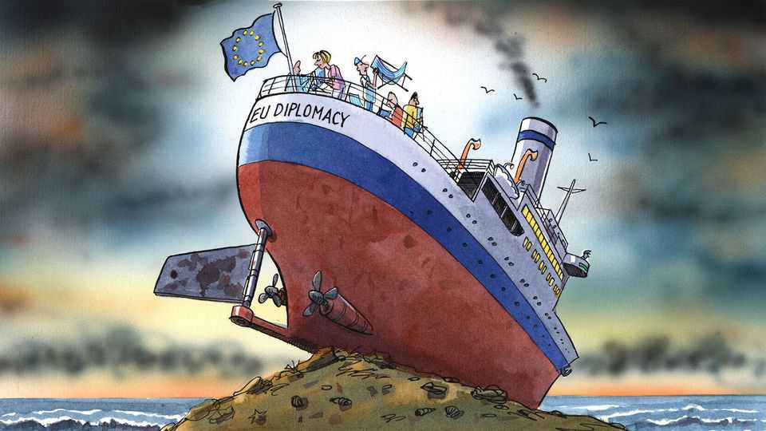

Facing global crises, Europe rearranges the diplomatic deckchairs
Foreign affairs, domestic rows

Sep 10th 2026
Many dreams haunt the corridors of European Union institutions in Brussels, the ghosts of summits past. Perhaps one day the continent’s administrators could spur the growth of home-grown tech champions, thus ending Europeans’ reliance on Silicon Valley giants. Maybe, in this life or the next, Eurocrats might devise a way to make France stick to the bloc’s budget rules. Still more improbably, Brussels-based mandarins could one day find a way to forge a unified foreign policy that satisfies the union’s 27 member states, thus allowing the continent to speak to the world with a single voice. That’ll show the Americans, Chinese and Russians that the EU is a force to be reckoned with!
Reality has a way of puncturing such plans. Neither the effort to rival America’s IT industry nor that to restrain French budgets has achieved much so far. The notion that Europe might be able to act as one in diplomatic matters, however, is getting a fresh boost. Plans crafted by Germany and France, the EU’s two biggest members, envision a rewiring of the club’s diplomatic apparatus. In an age of geopolitical uncertainty, finding a way for the EU to co-ordinate its foreign policy seems urgent. Yet the fault for any current dysfunction lies less with the diplomats than with their political masters. Blaming EU foreign-service wallahs for the bloc’s lack of diplomatic clout is like blaming deckhands for the sinking of a boat which the admirals on the bridge steered onto the rocks. How does one carry out a common foreign policy when, much of the time, there is no common foreign policy to carry out?
All sides agree that something is not quite right with the EU’s diplomatic machinery. A proto-foreign ministry set up in 2011 in the wake of the last big update of the bloc’s treaty, it is known inelegantly as the European External Action Service (EEAS). It is meant to be answerable both to the EU’s national capitals and to the bloc’s institutions. The result is a jumbled mess. Instead of having a foreign minister, the EU has a “High Representative/Vice-President”—not a job title that Henry Kissinger would have recognised. Since 2024 the position has been held by Kaja Kallas, a former prime minister of Estonia known for her hawkish views on Russia. Despite being the highest-profile HR/VP yet, she has had little more success than her three predecessors did.
To its critics the EEAS seems more interested in fighting—and losing—turf wars in Brussels than it is in running over 100 EU diplomatic missions around the world. Nobody thinks it works well now, or ever has. Few outside Brussels would notice were the EEAS to be more or less scrapped, as Germany and France seem to be suggesting. (The bulk of its work, under their plan, would be done by the European Commission, of which Ms Kallas is one of six vice-presidents.) It is easy for member states to blame the diplomats for the diplomatic service’s failures, and to simply remodel the organigram. But that presumes a better institutional arrangement would bring about a better outcome. That is almost as clear as the path through north-Atlantic icebergs on a foggy night.
In fact the convoluted diplomatic setup is not so much the cause of the problem as a symptom of a deeper one. In most policymaking matters EU members either agree to pool a great deal of sovereignty so as to maximise their collective Schwung (as they do when regulating vast swathes of business or negotiating trade deals), or jealously guard their national prerogatives (as with most taxation and policing). Diplomacy has fallen into a crack between these two approaches. The clunky EEAS apparatus suggests a will for collective action, raising expectations that Things Will Be Done. But decisions on foreign-policy need to be approved unanimously by the 27 national governments, which disagree on all sorts of things. Meetings of EU foreign ministers chaired by Ms Kallas are little more than talking shops. The result is that Europe generally looks divided and muddled.
Rearranging the diplomatic deckchairs will do nothing to resolve the deep-seated differences that have splintered the EU’s putatively joint foreign policy. Fancy a single European approach on Israel and Palestine? Good luck: Germany is among the most steadfast allies of Israel; Spaniards see its government as little short of genocidal. No Eurocratic Talleyrand or Metternich could bridge that gap. How about “strategic autonomy” from America? France has wanted it for decades; Poland and others in the continent’s east think NATO is still essential to their security. The list of disagreements goes on. Only on supporting Ukraine has there been consensus, as befits an existential crisis for the continent.
The fatal flaw of the EU’s current structure is that it was set up in a different era. In the calmer pre-Trumpian days of the early 2010s, the EEAS kept itself busy wrangling problems that few national leaders cared much about, such as the future of the western Balkans or sanctions on Iran. But these days geopolitics is everywhere. Be it China’s excess industrial capacity, Russian hybrid attacks or American adventurism in Greenland and the Strait of Hormuz, events abroad dictate political dynamics at the national level. Hence matters once delegated to foreign ministries are now routinely handled by national leaders, points out Stefan Lehne of Carnegie Europe, a think-tank. That has left even less to outsource to well-meaning diplomats serving the EU institutions.
Can anything turn the EU into a coherent diplomatic actor? For years, Germany has urged for foreign policy to be decided on qualified-majority grounds, abolishing vetoes by individual countries. But that change would itself require unanimous consent, which is not forthcoming. The EU’s diplomats will continue to be blamed for failing to present a clear position to the world. As some in their ranks might be tempted to point out undiplomatically: no organigram can conjure up unity where none exists. ■